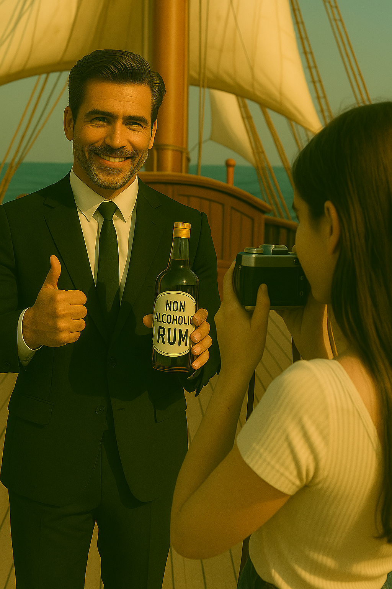

4. Ром без алкоголя — сердце с теплом
«Ром без алкоголя — сердце с теплом» После одной из публикаций на YouTube-канале «ПарусайБайки» Антону звонят представители крупной компании, производящей безалкогольный ром. Вдохновлённые концепцией здоровых морских приключений Dream Chaser, они предлагают стать официальными спонсорами канала. Весёлая история о том, как идея без капли алкоголя может привлечь внимание настоящих партнёров.